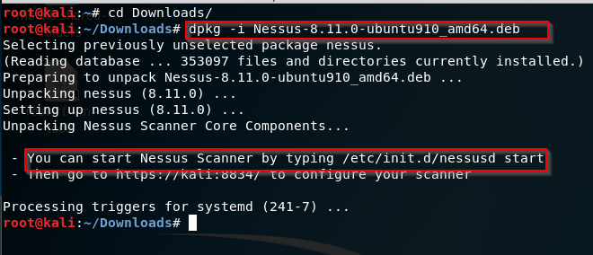

Nessus is a vulnerability scanner. We are goint to use this quite frequently when we become a pentester/ethical hacker we will use frequently this tool.
we need to download from here https://www.tenable.com/downloads/nessus?loginAttempted=true
and then open the terminal

After writing /etc/init.d/nessusd start, we need to go to kali:8834 link. And we find that

we clicked create a new scan then we choosed the basic network scan and

Scheduling tab is meaning that
So let's say that you are into automation and you're working as a pen Tester and you it's a Monday morning at 8:00 maybe you want to sleep in just a little bit longer and you say hey you know I got to e-mail a client. I'll schedule that email go out at 8:00.
After doing all settings(you can do on your own cuz is pretty easy)

you can launch the scan.

if we enable groups then it is classify according to vulnerability types. Otherwise claassified according to severity.
That is how it looks.

now we may not note all the vulnerabilities except critic ones or what are necessary or notable for us. And you can export nessus result and you can convert into a excel file (there is a tool for this) and then you can say the client, hey we noted super-neccessary vulnerabilities but there are a lot of them, we did in that way because we focused on the low hanging fruit. And then we can attach the excel file to our assessment for our client checking vulnerabilities.
YOU SHOULD ALWAYS GO OUT AND VERIFY NEVER TRUST YOUR VULNERABILITY SCANNER.
IN ASSESMENTS WE WOULD NOT PROVIDE NESSUS OUTPUT. WE HAVE TO GO OUT THE SOURCE OF INFORMATION AND TAKE SCREENSHOT OF IT.
HEATH ADAMS PAYS FOR TWO TOOL, BURP SUITE PRO AND NESSUS.